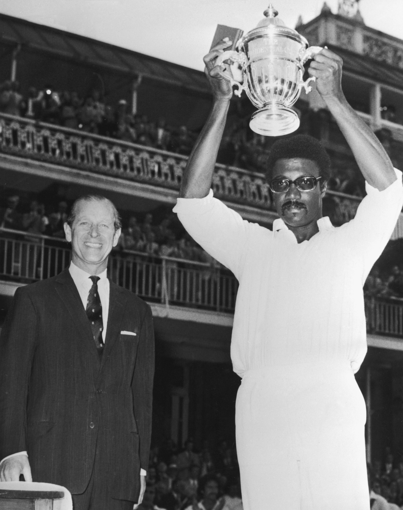

ICC Cricket World Cup
The ICC Cricket World Cup is the international championship of One Day International (ODI) cricket. The event is organised by the sport's governing body, the International Cricket Council (ICC), every four years, with first qualification rounds leading up to a semifinals and then finals tournament. The tournament is one of the world's most viewed sporting events and is considered the "flagship event of the international cricket calendar" by the ICC.
 The inaugural Cricket World Cup was hosted in 1975 by England, the only nation able to put forward the resources to stage an event of such magnitude at the time. The 1975 tournament started on 7 June. The tournament was won by the West Indies, who defeated Australia by 17 runs in the final at Lord's.
The 1979 World Cup saw the introduction of the ICC Trophy competition to select non-Test playing teams for the World Cup, with Sri Lanka and Canada qualifying.The West Indies won a second consecutive World Cup tournament, defeating the hosts England by 92 runs in the final. At a meeting which followed the World Cup, the International Cricket Conference agreed to make the competition a quadrennial event.
The 1983 event was hosted by England for a third consecutive time. By this stage, Sri Lanka had become a Test-playing nation, and Zimbabwe qualified through the ICC Trophy. India was crowned champions after upsetting the West Indies by 43 runs in the final.
The 1992 World Cup, held in Australia and New Zealand, introduced many changes to the game, such as coloured clothing, white balls, day/night matches, Pakistan overcame a dismal start in the tournament to eventually defeat England by 22 runs in the final and emerge as winners.

The 1996 championship was held in the Indian subcontinent for a second time, with the inclusion of Sri Lanka as host for some of its group stage matches. In the semi-final, Sri Lanka, heading towards a crushing victory over India at Eden Gardens Sri Lanka went on to win their maiden championship by defeating Australia by seven wickets in the final
From 1999-2007 australia continued to be the most dominant team by winning the worldcup for back to back 3 times in a row.
India, Sri Lanka and Bangladesh together hosted the 2011 Cricket World Cup. India won their second World Cup title by beating Sri Lanka by 6 wickets in the final in Mumbai, and became the first country to win the final on home soil.
 Australia and New Zealand jointly hosted the 2015 Cricket World Cup. The number of participants remained at fourteen. Ireland was the most successful Associate nation with a total of three wins in the tournament. Australia defeated New Zealand by seven wickets in the final at Melbourne to lift the World Cup for the fifth time.
Australia and New Zealand jointly hosted the 2015 Cricket World Cup. The number of participants remained at fourteen. Ireland was the most successful Associate nation with a total of three wins in the tournament. Australia defeated New Zealand by seven wickets in the final at Melbourne to lift the World Cup for the fifth time.
Finally, The 2019 Cricket World Cup was hosted by England and Wales. Neither finalist had up to this point won the Cricket World Cup. In the final, the scores were tied at 241 after 50 overs and the match went to a super over. After the super over, scores were again tied at 15. Therefore the match was tied, but the World Cup was won by England, owing to a greater boundary count than New Zealand in their respective batting innings.